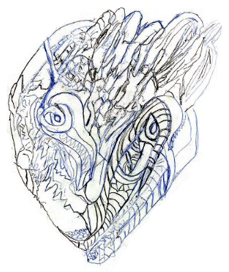

|
Salvia drew it using my hands
by Sporleder
This work is protected by copyright.
It is reproduced here with the author's permission.
| All of this drawing was done while in a salvia trance. I would smoke her leaves (mixed with extract) until I felt her take me over. Then I would fall on my bed with pen and paper and let her do the rest. Whenever I felt that it was me moving the pen, I would stop immediately. So it took about a week (one to two sessions of smoking per night, for a week). I had no idea what I was drawing, not a clue. I was amazed each time I came to, to see what she had put on the paper. |

|